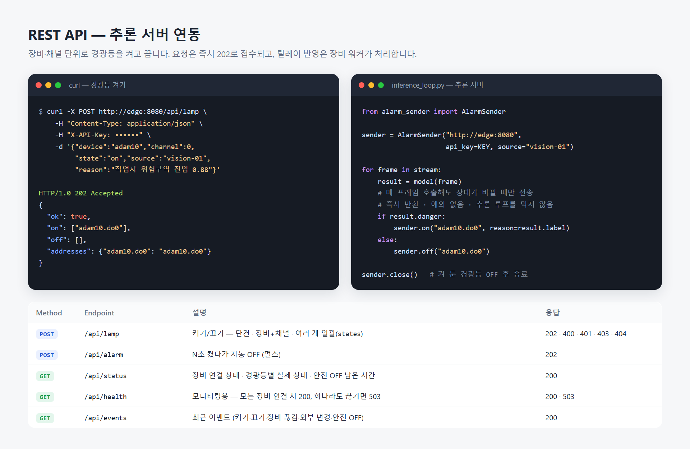
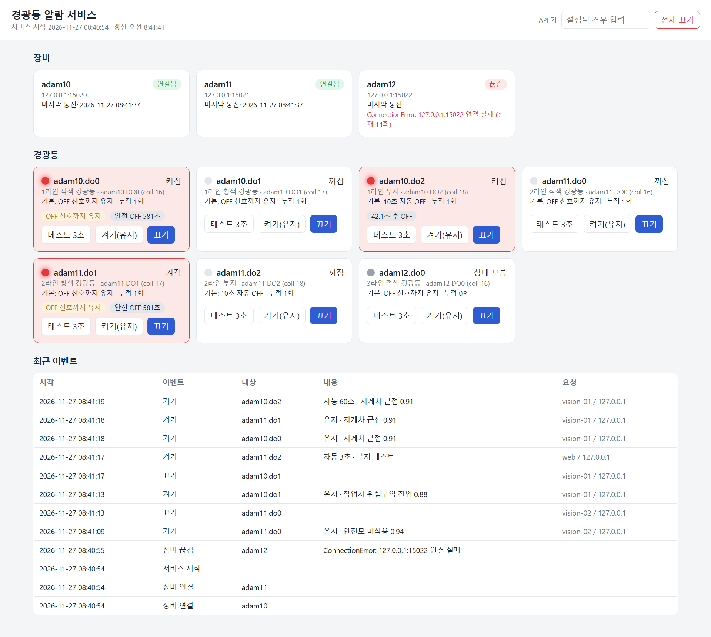
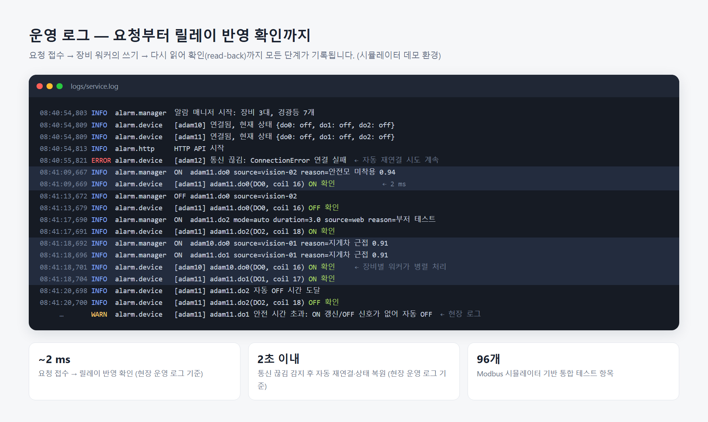

← 프로젝트 목록
Case Study 02
AI 안전관제 엣지 알람 서비스
AI 안전관제 플랫폼의 불량 · 위험 감지 결과를 현장 경광등(Advantech ADAM-6260 릴레이)에 연동하는 엣지 알람 서비스를 설계 · 개발하고 현장에 적용했습니다.
- 기간
- 2026
- 역할
- 설계 · 개발 · 현장 적용 단독
- 현장
- ADAM 2대 · 경광등 10채널
- 환경
- 오프라인 Windows 엣지 PC
문제
AI가 위험을 감지하면 현장 경광등을 켜야 하는데, 엣지 PC는 오프라인이고 추론 서버나 네트워크가 죽어도 경광등이 켜진 채 남으면 안 됐습니다.
내가 한 일
Modbus 릴레이 제어, 제어 REST API, watchdog·read-back·재연결 같은 안전 설계, 송신 라이브러리, 오프라인 배포 패키지를 혼자 만들었습니다.
결과
ADAM 2대 · 경광등 10채널 현장 적용. 요청부터 릴레이 반영 확인까지 약 2ms, 통합 테스트 96개.
01배경과 구조
AI 추론 서버가 불량이나 위험을 감지하면 현장 경광등을 켜야 했습니다. 엣지 PC는 보안 때문에 오프라인이어서 파일 복사로만 배포할 수 있었습니다.

02현장 장비 연동 (Modbus TCP)
pymodbus로 ADAM-6260 릴레이 제어 모듈을 구현했습니다.- 읽기 전용 스캔 → 단일 코일 쓰기 테스트 → 육안 확인 순서로 코일 주소 매핑을 확정했습니다(DO0 = coil 16).
- 장비마다 전담 워커 스레드와 Modbus 연결 1개를 두어 쓰기를 직렬화하고, 동시 요청 충돌을 막았습니다.
03제어 REST API
추론 서버가 호출하는 HTTP API입니다. 요청은 즉시 202로 접수되고, 릴레이 반영은 장비 워커가 처리합니다.

{"device": "adam10", "channel": 0, "state": "on"}형태로 장비 · 채널 단위 제어, 여러 개 일괄 제어 지원- 접근 제어(허용 IP, API Key), 입력 검증(400/404/411/413), 비동기 접수(202)
- 상태 확인 · 수동 제어용 웹 대시보드 — 외부 라이브러리 없는 단일 HTML

04신뢰성 · 안전 설계
경광등이 꺼져야 할 때 계속 켜져 있거나, 켜져야 할 때 안 켜지는 상황을 하나씩 막았습니다.
| 상황 | 대응 |
|---|---|
| 쓰기 실패 · 연결 단절 | 쓴 뒤 다시 읽어 확인(read-back), 실패 시 재시도, 끊기면 자동 재연결 |
| 외부에서 릴레이 변경 | 원하는 상태와 실제 상태를 맞추는 방식 — 감지해서 되돌림 |
| 추론 서버 장애 · 네트워크 단절 | Watchdog: ON 갱신이 끊기면 30초 뒤 자동 OFF |
| 깜빡이는 입력 | 최소 전환 간격 — ON은 즉시, OFF는 최소 3초 유지 |
| 서비스 시작 · 종료 | 시작할 때 정리, 종료할 때 전체 OFF (SIGTERM 처리) |
| 잘못된 설정 | 오타 키 · 타입 · 채널 중복 검증 후 시작 거부 |
05추론 서버용 송신 클라이언트 라이브러리
- 추론 루프를 막지 않는 비동기 송신 — 호출 즉시 반환, 백그라운드 스레드에서 전송
- 경광등별 최신 상태만 보관해 변화가 있을 때만 전송 → 매 프레임 호출해도 됨
- 서버 장애 시 지수 백오프(0.5 → 5초), 복구되면 최신 상태만 재전송, ON 동안 주기적으로 갱신
06성능 · 병목 분석
- HTTP 계층은 병목이 아님을 측정으로 확인했습니다.
- 간헐적으로 생기던 0.4~1.2초 ON 지연의 원인을 최소 전환 간격 로직에서 찾아냈고, ON 우선 규칙으로 해소했습니다.

07배포 · 운영 · 테스트
- 오프라인 배포 패키지: wheel 동봉, venv 자동 구성, PowerShell 빌드 스크립트
- Windows 작업 스케줄러 자동 실행, 비정상 종료 시 재시작하는 감시 스크립트(종료 코드 기반)
- 로그: 순환 로그 파일, JSON Lines 이벤트 기록, 반복 이벤트 요약
- 기존 플랫폼 Docker Compose(FastAPI 백엔드, PostgreSQL, MediaMTX 등)에 통합할 서비스 구성 작성 — Dockerfile, 헬스체크, graceful stop
- Modbus 시뮬레이터 기반 통합 테스트 96개 항목 — 재연결, 안전 시간, 외부 변경, API 오류 처리 등
08현장 적용과 트러블슈팅
ADAM 2대(경광등 10채널)에 적용하고, 다른 서버에서 호출하는 연동까지 검증했습니다.
ISSUE 1다른 서버에서 API에 접속되지 않음
- 분리
- netstat → 로컬 접속 → 방화벽 순서로 단계적으로 범위를 좁혔습니다.
- 원인
- 서비스 bind 주소가 loopback이었습니다. 바인드 설정을 바로잡아 해결했습니다.
ISSUE 2특정 장비만 하루 수십 회 통신 끊김
- 분석
- 며칠치 로그를 장비별 · 시간대별로 비교하고 "응답 지연"과 "연결 단절"을 구분했습니다.
- 원인
- 장비 웹 페이지를 상시로 띄워 두어 생긴 부하였습니다.
09기술 스택
Python (threading · http.server · urllib)pymodbusModbus TCPREST APIDocker / Docker ComposeWindows 작업 스케줄러 · 배치PowerShellRotatingFileHandler · JSONL
서비스는 표준 라이브러리 http.server로 만들었습니다. Docker 통합은 구성 파일 작성까지이며, 현장 운영은 Windows에서 직접 실행하는 방식입니다.